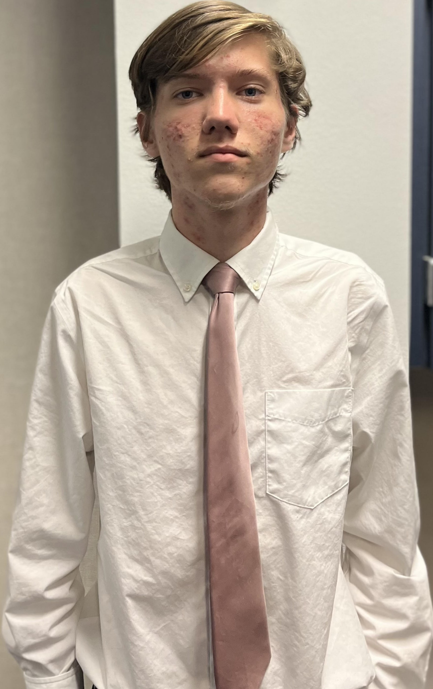

History
DelveHomes was founded in 1969 by Dan Homes on the basis of organized housing for all persons. After a rough start with next to no one being interested in the project, he was finally approached by a small group of engineers who heard of his ideals and were willing to help. In 1973, the new team started working on what would become DelveHomes Machine-operated housing units.
Tech
DelveHomes housing units are all connected to a central computer that controls each and every module of each and every room. Not only does it define the capabilities of the amenities in the rooms, but it also lets those in the room communicate and travel between other rooms. For more information on the amenities present in the rooms, see here
Contact
Address: 5505 Blue Lagoon Dr. Miami, FL 33126
Email: themachine@delvehomes.org
Phone number: +1 (779) 800-6712
Fax number: +1 (779) 870-7021
EIN: 53-2450558
Meet the headliners behind the DelveHomes team.
Founder

Dan Grey, DelveHomes Founder
Ever since he founded the company back in spring of 1969, Dan has dedicated himself to the fruition of the Machine and safe, organized living for every man, woman, and child.
Engineers

Augustine Benjamin, DelveHomes Head Architect
Before coming on to the team in 2005, Augustine led several architectural projects to success as part of other companies. Since his introduction, DelveHomes engineering team has prospered, coming up with designs in record time.

Ivan Quick, DelveHomes Head Draftsman
An engineering prodigy from MIT, Ivan came on in 2005 and made quick work of designing the various apparatuses for the Machine.

Hans Orkensaw, DelveHomes Head Civil Engineer
Hans has been working with DelveHomes since the beginning, and nothing at Delve could have been made a reality without his interpretations of other's visions.
UX Designers
Calvin Adrian, DelveHomes UX Designer
Calvin is actually working two jobs as of now, and relegates most of the work to his subordinates. When he does do work, however, it is top of the line.

Titus Small, DelveHomes UI Designer
Titus is an intern subbing in for the actual head UI Designer, who is on leave. He has minimal knowledge and experience, but he's doing his best.